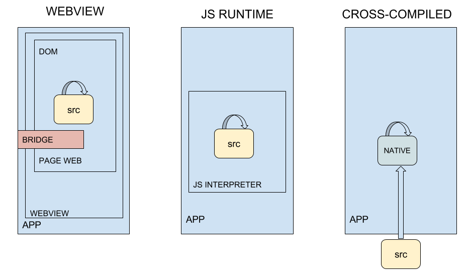

Ionic
Et les frameworks hybrides
Par Alexandre Nunesse, Benoît Mouquet & Camille Beaumont
LafargeHolcim
Plan
- Frameworks hybrides
- Ionic & cordova
- Click meme
- Casse croûte
- Livecoding
Hybrid frameworks
Hybrid Quésaco

Welcome to the jungle
- Cordova, Apache
- Ionic 1, Driftyco
- Ionic 2, Driftyco
- Onsen UI, Monaca
- Framework 7, iDangerous
- Sencha, Sencha
- Crosswalk, Intel
- PhoneGap, Adobe
- React Native, Facebook
- Titanium, Appcelerator
- Nativescript, Telerik
- Xamarin, Microsoft
- Rubymotion, Hipbyte
| Framework | Reuse | Community | Native Look/Behavior | |
|---|---|---|---|---|
| Naked Cordova | Libre | 80 à 100% | 50k | Non |
| Ionic 1 | AngularJS | 80 à 100% | 48k | Mnon |
| Ionic 2 | Angular | 80 à 100% | 48k | Mnon |
| Onsen | Libre | ? | 4k | Mnon |
| Sencha | ExtJS | ? | 5k | Moui |
| Crosswalk | Libre | ? | 2,5k | Mnon |
| Phonegap | Libre | 80 à 100% | 5k | Mnon |
| Framework | Reuse | Community | Native Look/Behavior | |
|---|---|---|---|---|
| React Native | React | 70 à 90% | 52k | Oui |
| NativeScript | Angular, Libre | 60 à 80% | 11k | Moui |
| Titanium | Custom | 60 à 80% | 7k | Oui |
| Framework | Reuse | Community | Native Look/Behavior | |
|---|---|---|---|---|
| Xamarin | C# | ? | 45k | Oui |
| Rubymotion | Ruby | ? | ? | Oui |
Comment choisir?
- Déploiement
- Time to market, reuse
- Apprentissage: environment, langage et architecture
- Applicatif: UIX, performance
- Maintenabilité et support
IONIC vs React Native
Angular vs React
Development
Reuse, outils, debugLook & Feel
Composants, maintenancePerformance
Extension, accès aux API nativesSupport
Communauté et pérénitéPodium...

Ionic & Cordova
Cordova
- Framework Open-Source
- Applitcations hybrides
- Fondation Apache
- Basé sur les Webviews
- HTML, CSS et JavaScript
- Accès aux composants physiques
- Votre application cordova depuis 2009
Plateformes supportées
Ionic
- Basé sur Cordova
- Développement axé sur Angular
- Ajout de composants UI pré-designé (Bootstrap like)
- Ionicons
- Plateformes supportées : Android, iOS, Windows
Ionic
Ionic v1 / v2
- Angular JS 1.4.x / Angular 2
- JavaScript / TypeScript
- Plugins cordovas wrappés
- Support officiel de Windows

Services Ionic
- Push
- View
- Deploy
- Package
- Auth
- DB (preview)
Tests
- Tests unitaires: Jasmine & Karma
- Tests d'intégration: Protractor & Appium
- Local via navigateur web
- Distant sur appareils
- Débogage via outils dev web
- chrome://inspect
Inconvénients des Webviews
- Problèmes liés au développement web
- Gestion verticale de la page
- Accès parfois limité aux composants physiques
- Performances pas toujours optimales
- Dépend de la webview de l'OS
- Windows : IE 11 Enjoy =D
Clickmeme
Présentation application
- Jeu mobile de réflexe
- On gagne des points en cliquant sur le meme différent
- Plus on est rapide, plus on marque de points
- Tableau des scores visible sur une interface web
Caractéristiques technique
- Ionic 2 / Angular 2 (Mobile et web) / TypeScript
- Database Firebase
- Utilisation Native storage
Démo
Téléchargez l'application
Playstore : com.ebiz.clickmeme
Interface web